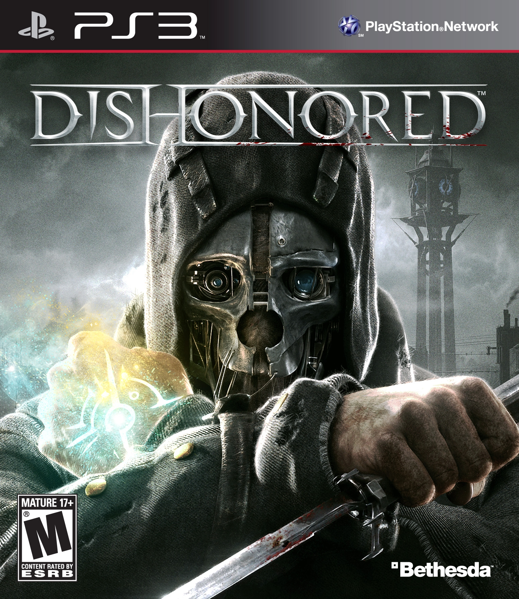
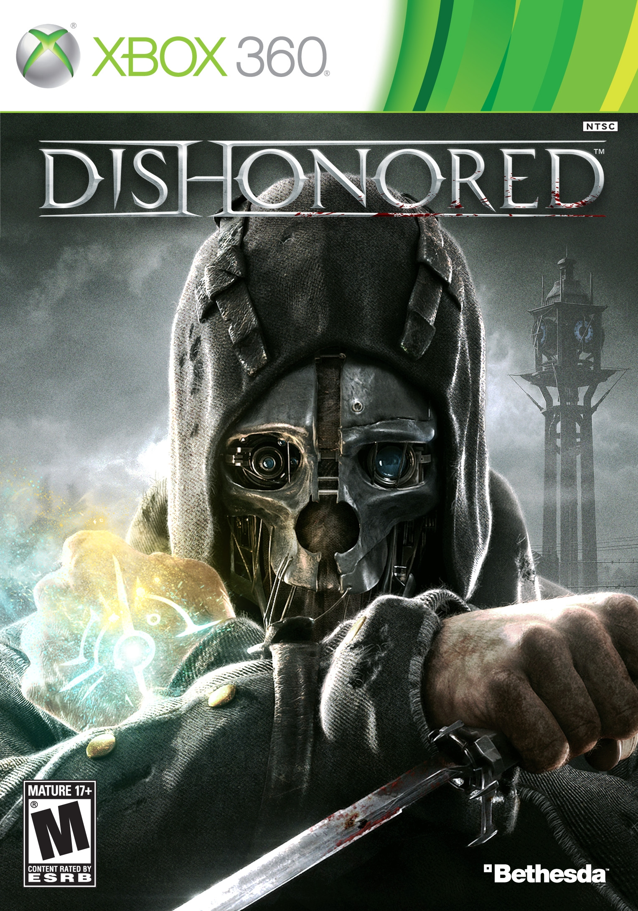
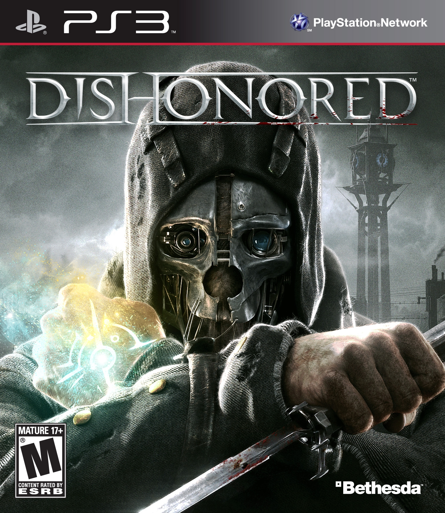
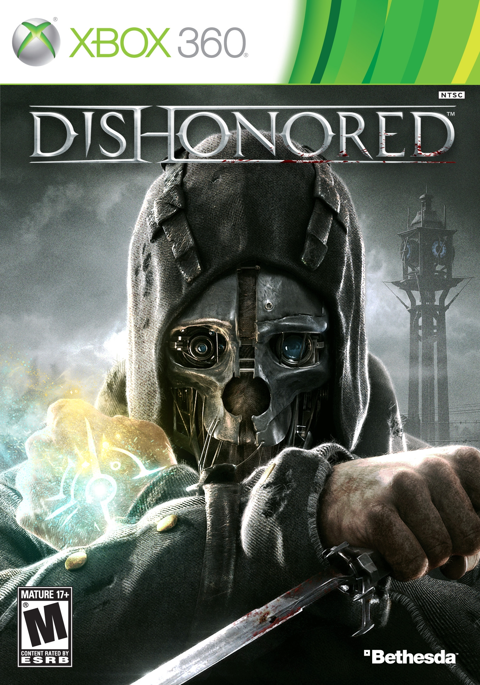
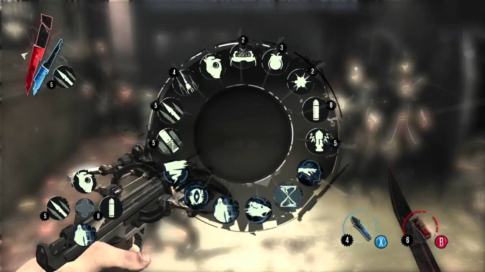
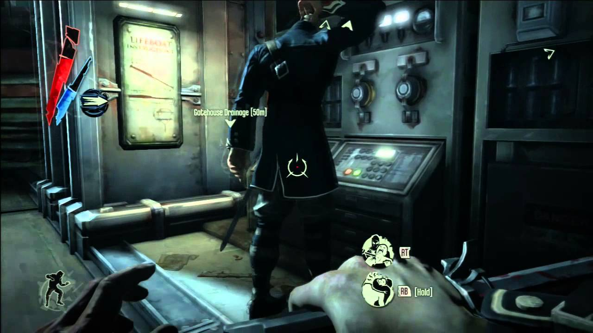
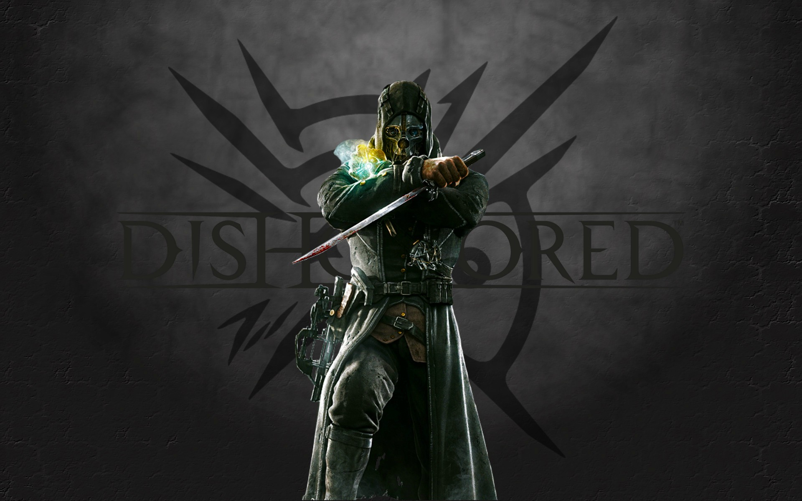

DISHONORED
Dishonored is a 2012 stealth action-adventure video game developed by Arkane Studios and published by Bethesda Softworks. It was released worldwide in October 2012 for Microsoft Windows, PlayStation 3, and Xbox 360. Set in the fictional, plague-ridden industrial city of Dunwall, Dishonored follows the story of Corvo Attano, bodyguard to the Empress of the Isles. He is framed for her murder and forced to become an assassin, seeking revenge on those who conspired against him. Corvo is aided in his quest by the Loyalists: a resistance group fighting to reclaim Dunwall, and the Outsider: a powerful being who imbues Corvo with magical abilities. Several noted actors including Susan Sarandon, Brad Dourif, Carrie Fisher, Michael Madsen, Lena Headey, and Chloë Grace Moretz provided voice work for the game.
 



The Game is played from a first-person perspective and allows the player to undertake a series of assassination missions in a variety of ways, with an emphasis on player choice. Missions can be completed through stealth, combat, or a combination of both. Exploring each level opens new paths and alternatives for accomplishing mission goals, and it is possible to complete all missions, eliminating all of Corvo's targets, in a non-lethal manner. The story and missions are changed in response to the player's violent actions or lack thereof. Magical abilities and equipment are designed to be combined to create new and varied effects.
During its three years in production, several versions of Dishonored were developed. Before the creation of Dunwall-inspired by late nineteenth-century London and Edinburgh-the game was set to take place in medieval Japan and seventeenth-century London. During development, test players discovered methods of exploiting the available powers and abilities to achieve unexpected outcomes; instead of restricting these techniques, the designers attempted to redesign levels to accommodate them. Dishonored's music score was produced by composer Daniel Licht to represent London in the nineteenth century.
Dishonored received positive reviews, focusing on the missions' individual narratives and the freedom available in completing them. Criticism fell on the overarching narrative, which was considered predictable, and problems in controlling the player's character. Following its release, the game won several awards, including the 2012 Spike Video Game award for Best Action-Adventure Game and the 2013 BAFTA award for Best Game, and was repeatedly recognized as the best action-adventure game of 2012 and one of that year's best games. Following its release, Dishonored was supplemented with additional content focusing on the assassin Daud and his quest for redemption. PlayStation 4 and Xbox One versions of the game were released in August 2015. A sequel, Dishonored 2, was announced in June 2015.
| Review scores | |
|---|---|
| Publication | Score |
| 9.5/10 | |
 |
8/10 |
.png) |
4.5/5 |
 |
8.75/10 |
 |
9/10 |
 |
9.2/10 |